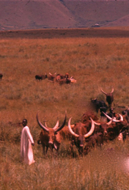

Introductory: nature and distribution; composers and reciters; occasions. Southern Bantu praise poetry: form and style; occasions and delivery; traditional and contemporary significance.
I
In its specialized form panegyric is the type of court poetry and one of the most developed and elaborate poetic genres of Africa. It seems to go with a particular ethos, a stress on royal or aristocratic power, and an admiration for military achievement. It is true that praises (including self-praises) also occur among non-centralized peoples, particularly those who lay stress on the significance of personal achievement in war or hunting (such as the Galla or Tuareg), and also that the use of ‘praise names’ is nearly universal. But the most specialized forms, and those which will primarily be considered here, are the formalized praises directed publicly to kings, chiefs, and leaders, composed and recited by members of a king’s official entourage.
First, something must be said about the ‘praise names’ which often form the basis of formal praise poetry. These are most often given to people but may also describe clans, animals, or inanimate objects, and they are usually explicitly laudatory. The Zulu king Shaka is praised in one of his names as ‘The Ever-ready-to-meet-any-challenge’ (Grant 1927: 211), a Hausa chief as ‘Fearful and terrible son of Jato who turns a town into ashes’, or an Ankole warrior as ‘He who Does Not Fear Black Steel’ (Morris 1964: 48). Such words or phrases occur frequently within the more complex form of a complete poem. Other ‘praise’ names are derogatory or concerned more with insight into inherent qualities than with praise. The Hausa ‘praise names’ (kirari), which in fact are often whole sentences and may refer to inanimate objects, illustrate this well. The stock praise name of molo (three-stringed guitar) goes ‘Molo, the drum of intrigue; if it has not begun it is being arranged’ (in reference to the common association between the molo and immorality) (Fletcher 1912: 48); of the wind ‘O wind you have no weight, but you cut down the biggest trees’ (Merrick 1905: 76). Similar stock descriptions are used of people or animals: a butterfly is ‘O Glistening One, O Book of God, O Learned One open your book’ (i.e. the wings, compared to the Koran); a lion ‘O Strong One, Elder Brother of the Forest’; while an old woman is addressed as ‘O Old Thing, you are thin everywhere except at the knee, of flesh you have but a handful, though your bones would fill a basket’ (Tremearne 1913: 174–6). These generalized and derogatory ‘praise’ names seem characteristic of some West African societies and appear in proverbs and riddles as well as conversation. They do not replace the more laudatory comments, however, for, also among the Hausa, every celebrated man has his own praise name which is used as a basis for prolonged praises by what Tremearne describes as ‘professional flatterers’ (1913: 177). Similarly among the Yoruba the oriki or praise names are permanent titles held by individuals, given to them by friends or, most often, by the drummers. Some individuals have several of these names, so that a collection of them, recited together, resembles a loosely constructed poem (also called oriki) about the person praised (Gbadamosi and Beier 1959).1
In eastern and southern Africa cattle form a popular subject in praise poetry, and inanimate things like divining implements or even a train or bicycle are also praised. In West Africa, apparently unlike other areas, formal praises are addressed to supernatural beings. Hausa bori spirits for instance, each have their own praise songs (taki, kirari). When the spirit is to be called, its praise songs are played through one after another until it takes possession of one of its worshippers (Smith 1957: 33). The Yoruba praise poems to deities in Nigeria and Dahomey (as well as from the Yoruba in Brazil) are particularly famous.2 Each of the many Yoruba deities (orisha) has a series of praises expressed in figurative and obscure language, sung by the priest. Here, for instance, is a praise poem about Ogun, the god of iron, one of the most powerful deities, worshipped particularly by warriors, hunters, and blacksmiths:
Ogun kills on the right and destroys on the right.
Ogun kills on the left and destroys on the left.
Ogun kills suddenly in the house and suddenly in the field.
Ogun kills the child with the iron with which it plays.
Ogun kills the thief and the owner of the stolen goods.
Ogun-kills the owner of the slave—and the slave runs away.
Ogun kills the owner of thirty ‘iwofa’ [pawns]—and his money, wealth and children disappear.
Ogun kills the owner of the house and paints the hearth with his blood.
Ogun is the death who pursues a child until it runs into the bush.
Ogun is the needle that pricks at both ends.
Ogun has water but he washes in blood.
Ogun do not fight me. I belong only to you.
The wife of Ogun is like a tim tim [decorated leather cushion].
She does not like two people to rest on her.
Ogun has many gowns. He gives them all to the beggars.
He gives one to the woodcock—the woodcock dyes it indigo.
He gives one to the coucal—the coucal dyes it in camwood.
He gives one to the cattle egret—the cattle egret leaves it white.
Ogun is not like pounded yam:
Do you think you can knead him in your hand
And eat of him until you are satisfied?
Ogun is not like maize gruel:
Do you think you can knead him in your hand
And eat of him until you are satisfied?
Ogun is not like something you can throw in your cap:
Do you think you can put on your cap and walk away with him?
Ogun scatters his enemies.
When the butterflies arrive at the place where the cheetah excretes,
They scatter in all directions.
The light shining on Ogun’s face is not easy to behold.
Ogun, let me not see the red of your eye.
Ogun sacrifices an elephant to his head.
Master of iron, head of warriors,
Ogun, great chief of robbers.
Ogun wears a bloody cap.
Ogun has four hundred wives and one thousand four hundred children.
Ogun, the fire that sweeps the forest.
Ogun’s laughter is no joke.
Ogun eats two hundred earthworms and does not vomit.
Ogun is a crazy orisha [deity] who still asks questions after 780 years.
Whether I can reply, or whether I cannot reply,
Ogun please don’t ask me anything.
The lion never allows anybody to play with his cub.
Ogun will never allow his child to be punished.
Does the woman who spins ever reject a spindle?
Does the woman who dyes ever reject a cloth?
Does the eye that sees ever reject a sight?
Ogun, do not reject me! [Ogun needs his worshippers].
(Gbadamosi and Beier 1959: 21–2)
Despite these elaborate religious praises, however, the most frequent subjects for panegyric are humans, especially kings and chiefs. Sometimes these are self-praises, like the personal recitations of the Hima noble class of Ankole in which a man celebrates his military achievements, building his poem on a sequence of praise names:
I Who Am Praised thus held out in battle among foreigners along with The Overthrower;
I Who Ravish Spear In Each Hand stood resplendent in my cotton cloth;
I Who Am Quick was drawn from afar by lust for the fight ….
(Morris 1964: 42)
Praises of kings are the most formal and public of all, ranging from the relatively simple Ganda praise of the powerful nineteenth-century king Mutesa cited by the Chadwicks:
Thy feet are hammers,
Son of the forest [a comparison with a lion]
Great is the fear of thee;
Great is thy wrath;
Great is thy peace;
Great is thy power
(Chadwicks iii, 1940: 579)
to the more allusive and figurative praise of another powerful ruler, a man who had seized power for himself in Zaria and was deposed by the British when they occupied Northern Nigeria:
Mahama causer of happiness, Mahama yenagi yenaga [meaning uncertain],
Mahama slab of salt who handles it tastes pleasure
— though thou hatest a man thou givest him a thousand cowries
— thou hatest a naked man’s blood but if thou dost not get his garment thou slayest him
— Mahama the rolling flight of the crow, O boy cease gazing and seeing first white then black …3
— the wall of silver that reaches the breast of the horseman
— the tying up that is like releasing4
— son of Audu thy help (is) God
— son of Audu, the support of God which is more than the man withthe quiver, yea more than his chief on his horse
— hammer of Audu
— salt of Kakanda that is both sweet and bitter5
— son of Audu, O sun thou dost not look askance and slightingly6
— storm on the land, medicine for the man with the mat-cover
— elephant with the red loins, medicine for the standing grass,7 with thy trunk thou spiest into every man’s house
— the beating of the rain does not stop the jingling of the bell8
— the swelling of the palm-stem that fills the embrace of the (climbing) boy9
— black dafara tree there is labour before thou breakest.10
The frank assessment of the emir’s character which accompanies the lauding of his power and achievements is not unparalleled. ‘Praise’ poems of people frequently include derogatory remarks, veiled or otherwise, or give advice as well as praise. Thus the praises of two Hausa emirs of Zazzau run
Look not with too friendly eyes upon the world,
Pass your hand over your face in meditation,
Not from the heat of the sun.
The bull elephant is wise and lives long.
and
Be patient, and listen not to idle tales
Poisoned chaff attracts the silly sheep—and kills them
(Heath 1962: 27, 32)
Self-praises, created and performed by the subject him or herself, are not uncommon. Among the Sotho all individuals (or all men) are expected to have some skill in the composition and performance of self-praises, and the composition of formalized praise poetry among the Ankole is expected to be within the capacity of every nobleman: he must find inspiration in a particular episode, compose a personal and topical praise poem based on it, and add it to his repertoire (Morris 1964: 13). Again, among the Ibo the taking of a title is sometimes followed by a string of self-praises (Egudu 1967: 9–10). As we saw in Chapter 4, a certain amount of private enterprise praising of individuals is also widespread. In northern Sierra Leone and other parts of West Africa it is not uncommon for expert Mandingo singers, sometimes accompanied by drummers or xylophonists, to wander through the streets or attend festivals on their own initiative. They pick on some outstanding or reputedly wealthy individual for their praises; and even those who refer to them contemptuously as ‘beggars’ are in fact glad to reward them with gifts and thanks, and thus hope to send them on their way content, avoiding the possibility of public shaming for lack of generosity. Praises by women sometimes occur too. In the kingdom of Dahomey choruses of wives are expected to perform in praise of the king and chiefs (Herskovits 1938, ii: 322) and professional singers include a women’s group among the Nupe (Bowers 1965: 54).
The most formal state praises, however, are usually made by official male bards. Thus every Zulu king had one or more specialists who both recited the praises of previous rulers and composed new ones to commemorate the achievements and qualities of the present king. Similarly there were specialist praise poets, ranging from the Ashanti state drummers and singers to the Rwanda dynastic poets described in an earlier chapter. Where accompaniment is important whole teams may sometimes be responsible for official praises; among the Hausa a District Head’s maroka (praise) team normally contained several drummers (to play the different types of drum), eulogists, two or more pipers, and sometimes a horn-blower (Smith 1957: 29). Lesser chiefs tended to have bards who were less skilled and less specialized, modelled on the king’s but performing in a less complex and more limited way.
The style of recitation varies between the unaccompanied forms characteristic of the Southern Bantu praises, those with fairly minimal accompaniment on some stringed instrument,11 and that in which the accompaniment is stressed (usually percussion or wind). This last type is widespread in West African states and its precise form is sometimes a significant aspect of the attribution of status implied in the praise. Among the Hausa the amount or type of musical accompaniment is clearly laid down for the praises of each grade of ruler in the hierarchy; wooden gongs, for instance, may not be used to praise anyone below a certain level, and there are special instruments that can only be used for praising kings and leading vassals (Smith 1957: 28). In West Africa the whole praise may take place on the drum or on horns, without the use of the human voice at all, a particularly common form in southern Ghana, Dahomey, and Nigeria but also recorded in some more northerly areas (for drum poetry see Ch. 17).
Most praise poetry, above all the official type, seems to adopt a more or less obscure and allusive style. The language may be archaic and lofty, there are often references to historical events or people which may need interpretation even to local listeners, and figurative forms of expression are common. Especially frequent are comparisons of the person praised to an animal or series of animals. His strength may be conveyed by referring to him as a lion, a rhinoceros, or an elephant, and, particularly in Southern Bantu praise poetry, the actions and qualities of the hero may be almost completely conveyed in metaphorical terms, only the animals to which the hero is implicitly compared being depicted in action. Comparisons to natural phenomena are also fairly frequent—the hero is likened to a storm, a rock, a downpour of rain. Other figurative forms of expression occur, sometimes reaching a high degree of complexity. In one Rwanda poem the royal name, ‘Ntare, suggests to the poet the term intare, lion; he does not make a direct substitution of one name for the other, but ‘veils’ the royal lion by talking about the qualities of the animal, and so refers to the king by such terms as ‘Hunter of zebras’, ‘Clamour of the forests’, ‘Mane-carrier’ (Kagame 1951b: 17). Not all praise poetry takes allusion quite so far, but in general panegyric seems to exploit allusion and imagery to a higher degree than other forms of poetry in Africa. Praise of a person (or a thing) is not something to be expressed in bald or straightforward language.
Much panegyric is formalized, thus less variable than many other types of oral literature. Unlike self-praises and the more informal and topical praise poems there seems to be a marked tendency for the state praises of present (and particularly past) rulers to be handed down in a more or less received version. Word and stanza order is, indeed, sometimes varied from recitation to recitation, or follows the particular version approved by an individual bard (as in the case, for instance, of Southern Bantu panegyric), but the changes seem to be minor; stress is laid on conformity to tradition. In Rwanda, with its powerful corporation of bards, the exactness of wording seems even more close. In one case there were only very slight variations in four versions by four different bards of a 365-line praise poem attributed to a poet of about 1820 (Ibid.: 24ff).
The occasions for the performance of praise poetry have already been touched on in the discussion of its authors and reciters. Praise names are used when formal address is required. Among the Southern Bantu the praise name of an individual’s clan was used on formal occasions, while among the Yoruba praise names, sung or drummed, are to be heard widely on festive occasions when the drummers go about the streets formally addressing the passers-by and receiving a small reward in return. Among many West African peoples drummers at a king’s gate play not only the king’s praise names, but announce and honour important guests by drumming or piping their names as they enter the palace. A man’s status is recognized and reaffirmed by the use of these formalized praise names, particularly when, as in the announcement of visitors, this is a matter of public performance.
Among peoples to whom the concept of praise names or praise verses is common, there are many informal occasions when praises are used in the same way as speeches or commentaries in other contexts. Thus among the Kele of the Congo wrestling matches are often accompanied by a form of praise on the talking drum: the contestants are saluted as they enter the ring (‘the hero, full of pride’), there is comment and encouragement from the drums as the match continues, and at the end praise for the victor (Carrington 1949a: 63–5). On festive occasions among many peoples—the Yoruba are one example—singers and drummers often welcome those who attend with songs or chants of praise, usually led by a soloist who improvises to suit the individual, accompanied by a chorus. The popularity of praises means that they can be used for profit, a possibility frequently exploited by the roving Hausa soloist described in the last chapter. But they can also stir people to genuine excitement: gifts are showered on the praise poets from enthusiasm as well as fear. Among the Soninke, writes Meillassoux,
leur maniement du langage, les chaleureuses louanges dont ils couvrent leurs auditeurs, la beauté de leur musique ou de leurs rythmes suscitent d’authentiques émotions, une sorte d’ivresse enthousiaste qui entrâine à donner sans compter
(1967: 14).
Praise poetry often plays an essential part in rites of passage: when an individual (or group) moves from one status to another in society, the transition is celebrated by praises marking the new status or commemorating the old. The eulogies involved in funeral dirges are described elsewhere, but in a sense they also fall into this category. Again, self-praises by boys at initiation, as among the Sotho or the Galla, are an important aspect of their claim to adulthood, which is heard and accepted by their audience. Among many peoples, weddings are also an obligatory occasion for praises of bride and groom either by their friends and relations or by professional bards. Accession to office is another common context for praise poetry, usually in public and in the presence of those who take this opportunity to express their loyalty. Sometimes self-praising is used on such occasions; the Hima of Ankole recited praises when a man was given a chieftainship by the king or when he dedicated himself to the king for service in battle (Morris 1964: 12).12 Even when a new status is not being formally marked, praise poetry is often relevant in the analogous situation of publicizing an individual’s recent achievements, particularly those in battle or the hunt.
Most spectacular and public are the frequent occasions on which rulers are praised. Sometimes this takes a very simple form—as on the bush paths in northern Liberia or Sierra Leone when a petty chief, carried in his hammock, is accompanied by praises as he enters villages and the local dwellers are thus instructed or reminded of his chiefly dignity. Or it may be a huge public occasion as in the Muslim chiefdoms in Nigeria—Hausa, Nupe, Yoruba—when at the ‘Sallah’ rituals (the Muslim festivals of Id-el-Fitr and Id-el-Kabir) the subordinate officials attend the king on horseback, accompanied by their praise-singers. Their allegiance is shown by a cavalry charge with drawn swords outside the palace; the official praise-singers take part in the gallop, piping and drumming the king’s praises on horseback. Any sort of public event (the arrival of important visitors to the ruler, the installation ceremonies of a chief, a victory in battle) may be the occasion for praises by official bards or other experts; the ruler’s position is commented on and recognized by the stress laid both on the dignity of the office and, more explicitly, on the achievements of its present incumbent. Periodic praises are often obligatory. Among some of the Yoruba the praises of the king, with the complete list of his predecessors and their praises, must be recited once a year in public. In many Muslim kingdoms the ruler is celebrated weekly by teams of praisers (reciters, drummers, pipers) who stand outside the palace to eulogize his office, ancestry, and power, sometimes including at his request those of his friends or patrons. In return the ruler acknowledges their praise by gifts or money which are often given publicly.
The manifold social significance of praise poetry is clear. It can validate status by the content of the praise, by the number and quality of the performers, and by the public nature of the recitation. This validation is often acknowledged by gifts. Praise poetry stresses accepted values: the Hausa praise their rulers in terms of descent and birth, the Zulu emphasize military exploits, and the Nupe voice their admiration for modern achievement in their praises of the ruler’s new car (Nadel 1942: 140–1). This kind of poetry can also act as a medium of public opinion, for up to a point praisers can withhold praise or include implicit or explicit derogatory allusions as a kind of negative sanction on the ruler’s acts. Further social functions are publicizing new status or achievements in a non-literate culture, flattering those in power or drawing attention to one’s own achievements, preserving accepted versions of history (particularly the exploits of earlier rulers), serving as an encouragement to emulation or achievement, and, not least, providing an economically profitable activity for many of those who engage in it. But consideration of the obvious social functions of praise poetry must not obscure its very real literary qualities. It was also appreciated for its intellectual and aesthetic interest, and for the fact that on some occasions it was recited purely for enjoyment—in the evening recitations of the Hima, or in the salons of important Hausa prostitutes where there was nightly praise-singing and witty conversation.
Many of these general points will emerge more clearly in a detailed discussion of the praise poetry of the Southern Bantu, the praise poetry which has been most fully documented and described. Obviously the details of occasion, tone, performance, and, most of all, style are peculiar to the societies which practise them. But the importance of praises in Bantu society has something in common with praises of other aristocratic or kingly societies in Africa, and a consideration of Southern Bantu praise poetry during the remainder of this chapter can throw further light on the general aspects that have been discussed so far.13
The praise poems of the Bantu peoples of South Africa are one of the most specialized and complex forms of poetry to be found in Africa. Many examples have been published in the original or in translation (though as yet these are probably only a fragment of what could be found), and there is a large literature about them by scholars in South Africa. Elsewhere, in general studies of African oral literature, they have tended to be ignored, or, in the most recent general account (Bascom 1965), mentioned only in passing under the heading of ‘Briefer Forms’, which is an odd way of classifying such elaborate and lengthy poems.
These praise poems have been described as intermediary between epic and ode, a combination of exclamatory narration and laudatory apostrophizing (Lestrade 1937: 295). A certain amount of narrative is involved—the description of battles or hunts, and the exploits of the hero. But the general treatment is dramatic and panegyric, marked by a tone of high solemnity and a lofty adulatory style. The expression is typically obscure and intense, and the descriptions are presented in figurative terms, with allusions to people and places and the formalized and poetic praise names of heroes.
This poetry occurs widely among the Southern Bantu cluster of peoples in South Africa where it is regarded by the people themselves as the highest of their many forms of poetic expression. It has been particularly well documented among the Nguni-speaking peoples (a group which includes Zulu, Xhosa, and Swazi as well as the offshoot Ngoni of Malawi) and the Sotho groups (including, among others, the Lovedu and Tswana); and it also occurs among such people as the Venda and the Tsonga-speaking groups. Although at different periods and among different peoples there are differences of tone and form which would have to be considered in a detailed account of this poetry,14 in general they share the same form and here they will be treated together. Besides these famous Southern Bantu forms, similar poems occur elsewhere among the Bantu, notably among the cattle-owning aristocrats of East Central Africa. The poems of the Bahima in Ankole, described by Morris (1964) as ‘heroic recitations’, and the ‘dynastic poetry’ and ‘historical poems’ of Ruanda (Kagame 1951b; Coupez 1968) have something in common with Southern Bantu praise poetry and they could perhaps be classed together.15
Although normally addressed to distinguished human beings, praise poems can be concerned with almost anything—animals, divining bones, beer, birds, clans. Even a stick may be apostrophized in high-sounding terms, as in this Zulu poem:
Guardsman of the river fords,
Joy of adventurers reckless!
(Dhlomo 1947: 6)
Praises of animals are very common, usually of the male. Among the pastoral Zulu cattle are a particularly popular subject, but wild animals also appear. The lion is referred to as the ‘stone-smasher’, or ‘awe-inspirer’, or ‘darkness’, and the crocodile is the
Cruel one, killer whilst laughing.
The Crocodile is the laughing teeth that kill.
(Lekgothoane 1938: 201)
Some animal praises are more light-hearted and humorous than the solemn panegyrics of prominent people. Consider, for example, the following Southern Sotho praise poem with its vivid and concise description of a pig:
Pig that runs about fussily,
Above the narrow places, above the ground;
Up above the sun shines, the pig grows fat,
The animal which grows fat when it has dawned.
Pig that runs about fussily,
With little horns in its mouth.
(Lestrade 1935: 9)
But even praises of animals are often marked by solemnity and allusiveness. Indeed there is often an intentional ambiguity in the poems between animal and person, and some poems can be interpreted as sustained metaphors. The following Northern Sotho poem appears to be about a leopard; but the allusion is to the chiefs of the Tlokwa, whose symbol was a leopard:
It is the yellow leopard with the spots
The yellow leopard of the cliffs
It is the leopard of the broad cheeks
Yellow leopard of the broad face, I-do-not-fear
The black and white one, I-get-into-a-small-tree
I tear off the eyebrows16
Clawer am I, I dig in my claws
My people (adversaries) I leave behind
Saying: this was not one leopard, there were ten.
Mr. Claws, scratch for yourself
Even for a big man it’s no disgrace to yell if scratched
Leopards of the Tlokwa country
Of Bolea, where the Tlokwa came from
Wild cat with the broad face
Both impala buck we eat and cattle
You died in Botlokwa
In the Tlokwa-land of Mmathsaka Maimane
Tlokwa-land of the sons of Mokutupi of Thsaka
Where do you go in Tlokwa-land (to seize cattle)?
It is full of blood, it has got the liver
Leopard of Bolea.
Yellow leopard of the clan Maloba the great
Yellow spotted one
Poor nobody, active smart fellow that summons together a huge gathering
My victim goes away with his scalp hanging down over his eyes
Leopard of the many spots
Leopard of the very dark spots
Leopard grand old man (formidable one)
Even when it can no longer bite, it still butts its adversaries out of the way with its forehead.
(Lekgothoane 1938: 193–5)
The most developed and famous forms, however, are those in which people are directly praised and described. In some areas these include self-praises, such as those composed by boys on their emergence from traditional initiation schools or by warriors on their return from battle. Others occur in the relatively informal context of a wedding when a woman may be praised (which is otherwise unusual). Most ambitious and elaborate of all are the praises composed and recited by the professional bards surrounding a king or chief. The following extract from one of the many praises of the famous Zulu king, Shaka, illustrates the use of allusion, metaphor, and praise name which are combined with some narrative to convey the bravery and fearsomeness of the king as he defeated his enemy Zwide:
His spear is terrible.
The Ever-ready-to-meet-any-challenge!
The first-born sons of their mothers who were called for many years!17
He is like the cluster of stones of Nkandhla,
Which sheltered the elephants when it had rained.18
The hawk which I saw sweeping down from Mangcengeza;
When he came to Pungashe he disappeared.
He invades, the forests echo, saying, in echoing,
He paid a fine of the duiker and the doe.
He is seen by the hunters who trap the flying ants;
He was hindered by a cock in front,
By the people of Ntombazi and Langa [mother and father of Zwide]
He devoured Nomahlanjana son of Zwide;
He devoured Mdandalazi son of Gaqa of the amaPela;
He was lop-eared.
He devoured Mdandalazi son of Gaqa of the amaPela;
He was lop-eared.
The Driver-away of the old man born of Langa’s daughter!
The Ever-ready-to-meet-any-challenge!
Shaka!
The first-born sons of their mothers who were called for many years!
He is like the cluster of stones of Nkandhla,
Which sheltered elephants when it had rained …
The Eagle-which-beats-its-wings-where-herds-graze!
He drove away Zwide son of Langa,
Until he caused him to disappear in the Ubani;
Until he crossed above Johannesburg and disappeared;
He crossed the Limpopo where it was rocky;
Even though he left Pretoria with tears.
He killed the snake, he did not kill it in summer,
He killed it when the winter had come.
(Grant 1927: 211–3)
In more purely panegyric vein is the briefer praise poem to Moshesh, the famous Southern Sotho chief:
Nketu (frog) of the regiment, companion of Shakhane and Ramakh-wane,
Stirrer-up of dust, you came from the centre of the plateau of Rathsowanyane,
The child of the chief of Qhwai saw you,
You were seen by Ratjotjose of Mokhethi;
Cloud, gleaner of shields,
When Nketu is not there among the people,
The leaders of the regiment cry aloud and say, Nketu and Ramakhwane,
where are you?
(Lestrade 1935: 10)
The main topic tends to be the chief’s military exploits. However, other subjects are also introduced. Among the Swazi a leader’s praise poems are always known by all his followers, and include references not only to his actions in war but also to acts of generosity and to his skill and achievement in hunting. Comments on personality,19 and criticism which can provide a kind of social pressure on an unpopular chief, are not uncommon, and sometimes sarcastic or even insulting remarks are included which, among the Ngoni at least, are said to represent a high kind of praise—such comments are so ludicrous that they could not possibly be true (Read 1937: 22). Praises composed more recently may include references to, for instance, winning a case in the High Court (Morris 1964: 84ff.), travelling abroad to work in European areas, or dealing with tax collectors (Schapera 1965: 4, 229). But it remains true that the most outstanding and beautiful of the traditional praises are those to do with war (and often more peaceful exploits are expressed in military terms).
Various stock topics about the hero’s military actions are described in, for example, most Sotho praise poems.20 These include the leader’s temper before the battle, his journey to the field, his fighting, his victims, the booty, and finally his return home, all portrayed in emotional and high-flown terms. The basis of the events mentioned is authentic, but the emphasis is on those incidents in which the hero excelled. Thus even if reverses are mentioned, they are expressed euphemistically. Even if a war was lost, the hero won one of the battles. Or a rout may be admitted to throw into greater contrast the hero’s second and more vigorous offensive. The opponents are frequently referred to in contemptuous terms, compared, for instance, to a small and despicable ox, or to a bull without horns fighting against a conquering and triumphant bull. In these praises it is usually the chief himself who is the centre of attention, but his companions and relatives may also be mentioned and their support is seen to add to the hero’s prestige and success.
The wars in which these heroes are depicted as fighting are varied. Many of them are against neighbouring peoples in South Africa and involve not only pitched battles but more mobile cattle raiding. Others are between rival contenders for power in one area, such as Shaka’s hostilities with some of his rivals. Wars against European invaders are also frequent occasions for praise poems—and, as Norton puts it, one may wonder whether the exploits of the conquerors were celebrated in as poetic and elevated a manner as some of those of the conquered (Norton 1950: 23). Here, for example, is a poem praising the bravery of a Swazi king, Mavuso, who was involved in fighting with the Afrikaaners:
Mavuso of Ngwane,
Dangazela [i.e. Mavuso] of Ngwane of Sobhusa.
News of war eats the child still in the womb.
If a person can walk he would have run away.
Flee ye by all the paths,
Go and tell the news to Mpande of the Zulu:
Say one elephant ate another,
And covered it with dress material and quantities of beads.
Those who ran away swore by Lurwarwa,
Saying, ‘Mswazi [early king and prototype] will not return, he is killing’
He fights in the darkness, when will the dawn come?
O chief that fights with the light of burning grass until the dawn comes.
They were saying that Mswazi was a boy herding calves;
We shall never be ruled by the hoe stood in the door of Majosi-kazi.
He will rule Mkuku and Msukusuku.
O one who comes in and goes out of sandy places,
O bird of Mabizwa-sabele
You are called by Shila of Mlambo,
For him you asked cattle from Mhlangala,
You are asked by Mawewe to ask cattle from Mzila of Soshan-gane.
Dutchmen of Piet Retief, we do not approve of you,
We blame you
By stabbing the chief who was helping you.
You cry at the grave of Piet Retief,
You cry at the grave of John.
O one alone without an advocate
Although Ntungwa had one:
Our chief who can stab,
I never saw a man who could stab like him.
He stabs with an assegai until he tires.
Mngqimila who bears a headdress of feathers,
Mababala who arms on a bad day,
Lomashakizela [one-who-goes-quickly], Lomashiya impi [one-who-leaves-his-army-behind],
Bayete, Bayete.
(Cook 1931: 193)
III
The Southern Bantu praise poems are largely built up of a series of praise names and praise verses. These praise names can be either category terms—a cock is ‘the aggressive one’, the class of cattle ‘the horned one’ or ‘God of the wet nose’ (Sotho)—or individual terms, as when a particular bull is ‘biggest in the herd’. Clan praise names are used in formal address to clan members; a Tswana clan, for instance, has the praise name Mokzvena (from kwena, a crocodile, the symbol of the clan), so an individual of the clan may be called by the general praise name of Mokzvena. In addition many individuals have their own laudatory epithets which refer to their character or their deeds; these epithets are usually bestowed on kings, leaders, and outstanding warriors. Thus we meet the Zulu ‘Sun-is-shining’, ‘Fame-spread-abroad’, or the Venda ‘Devouring Beast’, ‘Lord of the Lands’, or ‘Huge Head of Cattle’. Sometimes the praise name is expanded so that it takes up a whole line (as in the Zulu ‘Herd-of-Mtsholoza-he-escaped-and-was-killed’), and certain prominent people are praised with a whole string of names: Shaka, for instance, is said to have had several dozen.21 Sometimes the hero is also referred to by the name of his clan’s symbol or other animal—as, for instance, a crocodile, lion, rhinoceros, or elephant—and much of the poem is thus built up oh a sustained metaphor, almost allegory, about the animal which represents the hero. Some poems seem to make special use of these praise names, but in all of them the inclusion of these colourful epithets adds both grandeur and imagery to the verse.
Besides individual praise names (often just one word in the original) there are praise verses or praise lines in which one laudatory phrase takes up at least a whole line in the poem. One of the Sotho praise verses about the class of cattle runs: ‘The beast lows at the chief’s great place; if it lows in a little village—belonging to a commoner—it is wrong’, while Dingane’s silent and cunning character is referred to by ‘The deep and silent pool is calm and inviting, yet dangerous’, a Venda chief is ‘Light of God upon earth’, and Shaka is described as ‘The play of the women at Nomgabi’s’.
A praise poem is in general built up of these smaller units which are often loosely linked together into stanzas.22 These stanzas follow in varying orders in different versions. The order is variable because the different stanzas are often linked not by specific meaning but by their general application to the hero of the poem; it is often as important to convey a general picture of his actions and character as to present his exploits in a narrative within a chronological framework. The whole composition is extremely fluid, with given stanzas sometimes appearing, sometimes not, or some versions combining into one poem what others give as two or even three distinct praises.23 Thus each type (praise name, verse, stanza, and poem) is an extension of the previous kind, and the literary significance which is attached to each finds its fullest expression in the complex and extensive poem.
Any discussion of the formal structure of praise poems must include some reference to prosody (see especially Lestrade 1935, 1937; Grant 1927: 202; Mofokeng 1945: 136ff.). This is a difficult topic, but it seems that there is some kind of dynamic stress which, in addition to other stylistic features mentioned below, is one of the main characteristics which distinguish this art form as ‘poetry’. The division into lines is in most cases indicated fairly clearly by the reciter’s delivery, so that certain groups of words are pronounced together in the same breath, followed by a pause, and fall together in terms of sense, sometimes consisting of a formalized ‘praise verse’ of the kind already described. Within each of these lines there are normally three or four groups of syllables (or ‘nodes’, as Lestrade terms them), each group marked by one main stress but containing any number of other syllables. This ‘node’ sometimes consists of just one word (or is dynamically treated as one word). The main stress is sometimes on the penultimate syllable of the ‘node’, followed by a brief break; the stress on the last ‘node’ of the line is usually the strongest, and is followed by a more pronounced break. A stanza—and, ultimately, a whole poem—is thus made up of a succession of these lines, each consisting of three or four ‘nodes’ following each other indiscriminately. There seems to be no attempt at regular quantitative metre, for the stanzas are made up of irregular numbers of lines each with varying numbers of syllables, but the variety in syllable numbers (by some considered a mark of richness in itself) is bound together not only by the over-all pattern of this strong stress rhythm, but by repetition, parallelism, and other devices to be discussed below.
The overall pattern is also brought out by certain melodic features in the actual recitation. This has been studied in some detail in the case of Southern Sotho and especially in Zulu praise poetry (Mofokeng 1945: 136ff.; Rycroft 1960, 1962). In the delivery there is some musical use of pitch, even though the actual tones are too close to the tones of normal speech for the poems actually to count as ‘songs’. The melodic aspect centres round a limited series of notes, enough to provide a contrast with the less formalized speech of ordinary prose. The ends of stanzas in particular are brought out by the lengthening and special pitch (often a glide) of the penultimate syllable. This amounts to a kind of concluding formula, melodically marked, for each stanza (a detailed description is given in Rycroft 1960).
The example quoted by Lestrade may serve to bring out more clearly the effect of the penultimate stress (marked by an acute accent) in the ‘nodes’ and at the end of each stanza. This is a praise poem of Moshesh:
| Ngwana/Mmamokhathsane/ | Child of Mmamokhathsane, |
| Thesele, | Thesele (praise-name), |
| Thesele/pharu/e telele/telele, | Thesele, deep chasm, |
| ‘Kxomo/di | Cattle enter into it on their way, |
| kene/ka yona,/di sa ile, | |
| Le batho/ba kene/ka yona/ba sa lie. | Also people enter into it on their way. |
| Hlabfsi/ya BaKwena, | You who give the BaKwena cattle to kill, |
| Ak’O/hlabfse/nkxono/’ao, | Please give your aunt cattle to kill, |
| Ak’O/hlabise/Mmasetenane/ak’a rwale. | Please give Mmasetenane cattle to kill, that she may carry the meat away, |
| A re/ke mehlehlo/ya dikxomo/le ya batho. | That she may say, These are the fat stomachs of cattle and of people. |
(Lestrade 1935: 4–5)
The poetic style of these poems emerges more fully when one considers the language and form of expression in some detail.24 The language differs from that of ordinary prose (and to a large extent from that of other poetic genres among the Southern Bantu) in its archaic quality as well as the introduction of foreign words which add colour to the poem. Alliteration and assonance are both appreciated and exploited by the poet.25 As well there are many syntactic constructions peculiar to the poems: the use of special idioms and of elaborate adjectives and adjectival phrases means that there is a special style which has to be mastered by a composer of praise poetry. Long compounds abound, many of them in the form of the praise names mentioned already, and built up in various ways: from a predicate and object (‘Saviour-of-the-people’), predicate and adverb (‘The-one-who-sleeps-in-water’), noun and adjective (‘The-black-beast’), noun and copulative (‘The-cliff-white-with-thick-milk’), and several others. In Southern Sotho praises, prefixes and concord also appear in characteristic ways, with certain rare omissions of prefixes, and with contractions. There are special prefixes suitable for praising, for example se-, which indicates the habitual doing of something and is common in praises to suggest the hero’s habit or character, and ma-, which appears in names with the idea of doing something extensively or repeatedly.
Parallelism and repetition are marked features in praise poetry. These take various forms, and can be illustrated from the praise of Moshesh just quoted. In the third and fourth lines of the first stanza there is parallelism of meaning as well as, in part, of the words, with the second half of the line repeated identically the second time and in the first half a repetition of the same verb but with a different noun. Parallelism by which the same person is referred to by different names can be illustrated in the second and third lines in the second stanza, where the proper name Mmasete-nane refers to the same person mentioned earlier, with, again, identical repetition of other parts of the line. Both these forms of parallelism are common elsewhere in praise poetry. There are also many other forms: sometimes the repetition is not exact but the repeated phrase has something added to it, thus leading to progress in the action:
He has taken out Ntsane of Basieeng
He has taken out Ntsane from the cleft in the rock.
(Mofokeng 1945: 132)
A motif which is frequently used in describing someone’s exploits; when placed like this side by side it adds to the impression of achievement. Or the thought may be repeated in following lines even when the wording is different:
Watchman of derelict homes,
Caretaker of people’s ruins,
Guardian of his mother’s deserted house.
(Schapera 1965: 17)
The many other forms that occur include chiasmus (cross parallelism), deliberate change of word order in the second of three parallel lines, and the practice of linking, by which a phrase at the end of a line is taken up and repeated in the first half of the next.
The use of ideophones and interjections in praise poetry is another way in which its poetic quality can be enhanced. In Southern Sotho, for instance, the interjections hele (expressing surprise), he (of a wish), or pe (a recognition of something overlooked) are frequently used to convey emotion. Ideophones too can add to the descriptive quality with vivid conciseness: qephe, for instance, conveys a sound picture of the last drop of milk during milking, occurring in such a line as ‘There is not even the sound of the last drop, there is no milk’.
The characteristically obscure nature of the language in praises is partly due to its figurative quality, as we shall see. But it also arises from the great emphasis on allusion in this form of poetry, to historical events, places, and peoples. As will be obvious from some of the examples quoted, the use of proper names is often extensive and at times stanzas consist mainly of a catalogue of names and places.
The imagery in this form of poetry provides a striking contrast to the more straightforward expression in prose. By far the most common form is that of metaphor. The hero is associated with an animal, often the animal symbolic of his particular clan: a chief belonging to the clan associated with the crocodile may appear as ‘The crocodile of crocodiles’ or, as in the Southern Sotho praises of Lerotholi, the hero’s nature may be indicated in terms of the animal:
The crocodile looked in the deep pool,
It looked with blood-red eyes.
(Mofokeng 1945: 128)
Where the comparison is to domestic animals, it is often with the suggestion that they are too wild for their enemies to manage—cattle may refuse their milk, kick mud into the milk, tear their milker’s blanket, and in the case of a bull (a common image) his sharp horns are dangerous to those around him. Most frequent of all are comparisons to wild animals, to their bravery, wildness, and fearsome appearance. Thus a hero may appear as a lion, a spotted hyena, a big vulture, or a buffalo. In some praises the hero speaks in his own voice and himself draws the parallel with an animal or a series of animals:
I am the young lion!
The wild animal with pad-feet and black back!
Whose father has given up hope from the beginning and whose mother has wept for a long time.
I am the fine elephant of the Mathubapula, the finest elephant in the Matsaakgang.
(Ellenberger 1937: 19)
Though animal metaphors are the most common, heroes are also compared to natural phenomena like lightning, wind, or storm, or to other objects like a shield, a rock, flames of fire:
The whirlwind [i.e. the hero] caused people to stumble
The people were swept by the downpour of spears
The heavy rain of summer, a storm,
The hailstorm with very hard drops
(Mofokeng 1945: 129)
Sometimes there is a whole series of metaphors by which the hero is compared, or compares himself, to various different objects:
The rumbling which is like the roll of thunder,
Ox belonging to the younger brother of the chief …
I am the wind that raises the yellow dust,
I am the rhinoceros from the Badimo cattle-post,
Son of Mma-Maleka and nephew of Lesele
(Mofokeng 1945: 129)
Similarly in the Transvaal Ndebele lines:
The hail that came down in the middle of winter,
And came down at emaKhophana.
The elephant that took fire in a pot-sherd,
And went and set the kraals of men alight,
And burned down those of all the tribe
(Ellenberger 1937: 6)
Special grammatical forms are also used to introduce a metaphorical impression. In Southern Sotho, for instance, there is sometimes a change in the course of a poem from class 1 concords (the personal class) to others, a device which both conveys a metaphor and leads to variety, a change from the monotony of class 1 throughout; (Mofokeng 1945: 129) and ‘wrong’ concords in Zulu similarly suggest a metaphorical idea (Vilakazi 1938: 117).
Similes are much rarer than metaphors, but a few occur in descriptions. Someone may be said to be
Like a stone hammer
Like a round boulder, the hero
(Mofokeng 1945: 129)
or the chief may be ‘as shapely as the full moon’ or ‘as straight as a sandalwood tree’ (Schapera 1965: 21).
Hyperbole appears in emotional description, adding to the vividness of the picture. The confusion and fierceness of the battle may be indicated by
A cow should run carrying her calf
A man should run carrying his child
The small herbs were frost-bitten in the middle of summer …
The trees lost their leaves,
The sparrows, the birds that lay eggs in the trees, forsook their nests (Mofokeng 1945: 130, 124)
while a man’s feelings may be conveyed by
He left grieved in his heart
He left with the heart fighting with the lungs,
Heaven quarrelling with the earth
(Mofokeng 1945: 131)
It is largely through this figurative and allusive form of description that actions and qualities of people are conveyed in the praise poems. There is little stress on personal emotions, lyrical descriptions of nature, or straightforward narration. Rather a series of pictures is conveyed to the listeners through a number of laconic and often rather staccato sentences, a grouping of ideas which may on different occasions come in a different order. In this way impressions are communicated with economy and vividness. Vilakazi comments, for example, on the ‘emotional shorthand’ of such a passage as this Zulu poem:
The thunder that bursts on the open
Where mimosa trees are none.
The giant camouflaged with leaves
In the track of Nxaba’s cattle
He refuses tasks imposed by other people
(Vilakazi 1945: 45)
Here the figurative language conveys the action. First the hero’s temper is described as like a sudden thunderstorm, then his force is indicated by comparing it to a giant elephant hidden by the leaves of the trees. His strength is then brought out further by the way he is able to win back the cattle taken away by one of the headmen (Nxaba) who fled north in Shaka’s reign; finally the fact that not even Shaka can impose his commands on him proves his hardihood and strength of mind.
This loose ordering of stanzas by which a series of pictures of a man’s qualities and deeds is conveyed to the listener is typical. Nevertheless there are also vivid descriptions of the action itself in a way which fits the partly narrative aspect of praise poetry. Thus there are many examples of battle scenes in Southern Sotho praise poems. Here the sounds of the words, as well as the meaning, sometimes serve to heighten the effect:
Cannons came roaring, the veld resounding
Sword came tinkling from all sides
(Kanono tsa tla li kutuma thota e luma.
Lisabole tsa tla li kelema kahohle)
(Mofokeng 1945: 120)
The hero’s attack and the fate of his victims are favourite topics:
Maame, the whirlwind of Senate,
Snatched a man off his horse
The European’s horse took fright at the corpse
It took fright at the corpse without a soul
and
The lion roared when it saw them near.
It jumped suddenly, wanting to devour them
They ran in all directions the people of Masopha, They ran in all directions
and filled the village,
They scattered like finches.
(Mofokeng 1945: 123, 124)
When the victim falls on the ground, dead, and lies motionless this is described in one poem as
He lay down, the grass became taller than him
While it was finally dead quiet on the ground
while the effect of battle, its many deaths, can also be shown indirectly in a description of the general scene:
A foul smell came from the ridge,
They no longer drink water the people of Rampai
They are already drinking clods of human blood
(Mofokeng 1945: 123, 120)
It has frequently been remarked that the stress in praise poetry is on action and on the building up of a series of pictures about the deeds and qualities of the hero, rather than on lyric descriptions of nature; and in a general way this is certainly true. A few passages can be singled out as Dhlomo and Vilakazi have done, to represent a more lyrical approach to the beauty of nature. In a Zulu praise poem we have
The greenness which kisses that of a gall bladder!
Butterfly of Phunga, tinted with circling spots,
As if made by the twilight from the shadow of mountains,
In the dusk of the evening, when the wizards are abroad.
(Dhlomo 1947: 6)
Another picture which seems to be expressed for its own beauty is the brief praise of the blue-throated lizard in the Northern Sotho:
Blue-throated lizard of the Lizards
A blue chest (or throat) I have put on
Brown I also have put on
I, father-of-clinging of the hillside
(Lekgothoane 1938: 213)
But while such instances can fairly easily be found, in general the stress is far more on the hero and his character, so that what pictures are given of the scene and surroundings are subordinate to the insight they give into the hero’s activity. The weather, for example, may be described not for its own sake but as a kind of formalized indication that some important event is about to be depicted or to show the determination and perseverance of the hero whatever the conditions. This comes out in the following Southern Sotho passage:
When he is going to act the mist thickens;
The mist was covering the snow-clad mountains,
Mountains from which the wind blows.
There was a wind, there was snow, Likila,
There was a wind, there was snow on the mountains,
Some were attracted by pillows and remained
(Mofokeng 1945: 121).
Here, as in all these praise poems, the first interest seems to be the laudatory description of the hero rather than descriptions of natural phenomena or the straightforward narration of events. It is to this panegyricizing end that both the general form and the detailed style of these poems all tend.
IV
As these poems are very much oral compositions, intended to be heard rather than read, they demand also some consideration of the way in which they are delivered and composed and the kinds of occasions on which they tend to be heard.
Although again the details vary, there seems to be general agreement that praise poems are delivered much faster, and in a higher tone, than ordinary prose utterances. The reciter pours forth the praises with few pauses for breath and at the top of his voice. Often there is growing excitement and dramatic gestures are made as the poem proceeds. Grant describes a well-known Zulu praiser whom he heard in the 1920s. As the poet recited, he worked himself up to a high pitch of fervour, his face was uplifted, and his voice became loud and strong. The shield and stick that he carried were, from time to time, suddenly raised and shaken, and his gestures became more frequent and dramatic, so that he would suddenly leap in the air or crouch with glaring eyes while praises poured from his lips—until at last he stopped exhausted (1927: 202). The audience too play their part and often shout out encouragingly in support of what the praiser is saying or to cheer him on, adding to the emotional, even ecstatic mood that is induced by the delivery of these poems.
Something has already been said about the metrical and quasi-musical form of the delivery. Even in the mood of excitement described by Grant there is a clear emphasis on the penultimate syllable of certain words, and, in a more marked way still, on the word just preceding a pause at a line- or stanza-end. Praise poems have no musical accompaniment, nor, apparently, are they actually sung. Rather, they are semi-chanted, in the sense that a special stylized intonation is expected during the recitation. In Zulu the tonal and melodic movement is not a separate musical creation, but arises directly out of the words of a given line; and at the ends of lines and stanzas there are certain formalized cadences and glides, used as concluding formulas (Rycroft 1960).
The power of a praise poem seems to depend partly on the delivery and the personality of the reciter. It is said, for instance, that when the great general Ndlela kaSompisi recited the whole audience became awestruck (Bang 1951), and Lekgothoane expresses the same view in an extreme form when he writes that ‘a man whilst praising or being praised can walk over thorns, which cannot pierce his flesh which has become impenetrable’ (1938: 191). However, with this complex and sophisticated form of poetry, unlike the simpler prose tales, the literary effect does not seem to have been dependent primarily on the skill of the reciter, but rather on the art of the poet as composer—in his use of the traditional forms described above, such as figurative expression, allusion, and the various stylistic devices which, quite apart from his delivery, served to heighten the effectiveness and power of the verse.
The composition of praise poetry was traditionally both a specialist and a universal activity. All men seem to have been expected to have a certain skill. Commoners composed their own praises or those of their families and their cattle while those of high birth or outstanding prowess had their praises composed by others, the chiefs by specialist bards. The poems about earlier chiefs were handed down and probably known by the chief’s followers as well as by the specialist reciters; but it was the particular responsibility of the official bards to recite them on appropriate occasions. Though the older poems were preserved in this way, this is not to say that each recitation of a single poem was verbally identical. Indeed several versions of the ‘same’ poem have sometimes been recorded, differing in, for instance, the order of the stanzas, their length, or the detailed wording or order of lines. The form of praise poetry makes it easy for poems to become telescoped without radically altering the sense; this is what seems to have happened with many of the earliest poems which tend to be considerably shorter than those about more recent chiefs. The recitation itself can also lead to additions by the performer, in the sense that a stanza or line may be introduced in that particular performance from his knowledge of the stock language and imagery. In these ways each separate performance of the traditional poem may involve a certain amount of ‘composition’ in the sense of introducing variant forms into a poem which has a clear outline but is not fixed into an exact verbal identity. Composition also of course takes place in the more familiar way with original creation by a single poet, notably by the professional bards of the chief. Using the conventional forms the poet produces a new poem, perhaps designed to commemorate a particular occasion like the coming of distinguished visitors, perhaps in general praise of the chief’s deeds and character. The poem may then become famous and be added to the repertoire of praise poems of that particular chief, to be handed down to the court poets even after the chief’s death. Among some peoples at least these original praise poems are the property of the composer in the sense that until his death no one may recite them in public (Schapera 1965: 6, on Tswana), and the names of the original poets may be remembered for some time.
During the nineteenth and earlier part of the twentieth centuries, one of the main occasions for the composition of praise poems, among the Sotho-speaking peoples at least, was at the initiation ceremonies of boys (Laydevant 1930: 524; Mofokeng 1945: 136; Schapera 1965: 2–4). During their period of seclusion at the age of fifteen or sixteen the boys were required to compose and recite poems in praise of themselves, of their chief, and of their parents, and they had to recite these praises publicly on their emergence from seclusion. In this way the art of composition was insisted on as a necessary accomplishment for every man, involving some acquaintance at least with the various stylized forms of expression and historical allusions mentioned earlier.
Self-praising also takes place on many other occasions. The most famous situation is after a battle when a warrior composes his own praises to celebrate his exploits or, if he is outstanding in bravery or birth, may have them composed for him by others. In this way every soldier had his own praises (in addition, that is, to the praise names possessed in virtue of his membership of a particular clan) which he either recited himself or, among the Zulu at least, had shouted out to him by his companions while he danced or prepared for war (Tracey, 1948b: vii; Ngubane 1951). War was the main occasion for such praises, but many other events may inspire them—exploits in hunting particularly, and the experience of going to work in European areas which, as Schapera notes, forms a new type of adventure to be celebrated among the Tswana (Schapera 1965: 4).
Whatever the initial occasions and subjects of their composition, the situations when recitations are made are basically the same—some public gathering, whether a festival, a wedding, a beer drink, or the performance of some public work. The chanting of praise poetry takes its place among the singing of other songs, and it is frequent for someone to walk about reciting praises of himself or his leader, while those present become silent and attentive. Among the Sotho peoples, the situation of divining also provides a formalized occasion for praises of both the bones used in divination and the various ‘falls’ which the diviner follows in his pronouncements. Weddings too are very widely regarded as another stock situation in which praises are not only possible but required, for the bride or bridegroom is lauded in praises which include references to the fame of their family and its ancestors (Schapera 1965: 4–5; Vilakazi 1945: 58).
However, the prototypical situation for reciting praise poetry arises when a chief and his ancestors are praised by the specialist bards who form part of the chief’s official entourage. These praise poets (Zulu imbongi, Tswana mmoki) were much respected members of the chief’s official retinue and had the function of recording the praise names, victories, characteristics, and exploits (or expected exploits) of the chief to whom they were attached. The office was still recognized in the 1920s (Grant 1927: 202), although it seems that later on these functions were performed by poets without official positions. One of the traditional occasions for the recitation of praises of the chiefs was in the early morning when the praiser shouted them out. Formal praises were delivered on ceremonial and public occasions when the bard recited a whole series of eulogies, starting with the famous praises of the king’s or chief’s ancestors—praises handed down to him by word of mouth—and finally reaching the praises, often composed by himself, of the present chief (Nyembezi 1948: 111). Such praises were also declaimed on special occasions such as after a victory by the chief, on the advent of distinguished visitors, at the installation of a new chief, or at the distribution of royal bounty.
V
The social significance of these praise poems is bound up with the aristocratic nature of the Southern Bantu societies, traditionally based on a hierarchy of rank dependent on birth, and linked by an emphasis on the institutions of kingship and chiefship. The pastoral emphasis was also important, for even in those groups for whom agriculture formed the basis of the economy, cattle-holding was particularly esteemed as a mark of status and pride, an attitude which the many praise poems to cattle express clearly. The marked military tradition of all these societies, in particular the Zulu, is also relevant, together with the emphasis on competition, whether in military exploits, in hunting, in vying with other members of the same age-set, or for the favour and notice of the chief or king. This desire for fame and praise was something considered relevant not only in life but also after death: a man’s memory was kept alive in his praises.

Figure 11. Songs for Acholi long-horned cattle, Uganda. Cattle are often the subject of individual praises and praise names, sung by their herdsman (photo David Murray).
In societies where status and birth were so important, the praise poems served to consolidate these values. As so often with panegyric, the recitation of the praises of the chief and his ancestors served to point out to the listeners the chief’s right to the position he held both through his descent from those predecessors whose great deeds were commemorated and through his own qualities so glowingly and solemnly depicted in the poetry. As elsewhere, however, praises could contain criticism as well as eulogy, a pressure to conform to expectations as well as praise for actual behaviour. In this way, praise poetry could also have the implicit result of exerting control on a ruler as well as the obvious one of upholding his position.
These praise poems were, furthermore, not only a result of but in some cases a means towards acquiring position and power. The effective earning of praises was one way in which a man could recommend himself to his chief for honour and advancement. Praises meant support from others and, in Zulu society at least, a man’s influence was closely correlated with his praises; the more a man achieved in battle and in council, the more and better his praises. Further, in a culture in which dancing was so important, a man could only dance publicly according to the number and quality of his praise poems (Dhlomo 1947; Cope 1968: 21). The poems also acted as an inducement to action and ambition. A young man’s promise and his future heroic deeds were described in the praises he and his fellows made up, particularly on the occasion of his initiation when the ideals implied in the poems could fire the imagination. A chief who had only recently succeeded to office and whose reign still lay before him could be roused to activity by the exploits expected of him as by the knowledge that the praise poets could, however guardedly, sometimes blame as well as praise. Thus in youth a man was reminded in praises of the measure of his promise; in maturity his praises presented an inspired record of his deeds and ambitions; in old age he could contemplate the praises of his achievements and adventures; while after death the poems would remain as an ornament to his life, an inspiration and glory to his friends and followers, and a worthy commemoration to keep his name alive as one of the ancestors:
People will die and their praises remain,
It is these that will be left to mourn for them in their deserted homes
(from a Zulu praise poem; Cope 1968: 67)
The praise poems thus express pride in the possessions and values of the peoples among whom they were recited—pride in cattle, in family and clan, in chiefship, and in military achievement. It was war in particular that filled people with pride and emotion about their own actions or those of their friends; above all, about those of their chiefs and leaders. And the memory of such actions ‘fills the praiser with emotion, excitement, joy mingled with sorrow’ (Mofokeng 1945: 136).
Praise poetry is also a vehicle for the recording of history as viewed by the poets. There is little straightforward cataloguing of genealogies, for a knowledge of these is assumed in reciter and listener and merely touched on allusively. It is the great deeds and characters of earlier heroes which are commemorated rather than their mere names or ancestry, and national glories are thus recounted and relived. How far back these historical poems can go can be illustrated from the Ngoni praise of Ngwana, the hero who led one group of the Ngoni northwards to their present home in Malawi in the early nineteenth century, in flight from Shaka’s wars:
You who cut the trees and who cut the mouths,
You the locust, the grasshopper who fixed in your hair the feathers of the locust.
Who went below, and climbed up, and went to bring the morning star of the dawn.
You go, since you are rejected; you go and bring the armlets of wild animals; those of cattle will be much disputed.
You who remember the fault of long ago.
In descending, you descend together with the mountains.
You who drank the blood of cattle.
You who separated from the people of Shaka, Shaka of Mbelebele kraal.
You who separated from the people of Nyathi the son of Mashobane; it thundered, it was cloudy.
Thou resemblest cattle which were finished by wolves.
You who originated with the people of Mzilikazi.
You who originated with the people of Mpakana son of Lidonga.
You who originated with the people of Ndwandwe
(Read 1937: 25)
In spite of the great social importance of praise poetry in the aristocratic and military society of the nineteenth century, it would be wrong to overemphasize the social functions of this poetry at the expense of its literary and artistic significance. As is clear from a detailed consideration of their conventional form and style, Southern Bantu praise poems represent a complex form of art, and one which, while in the hands of the second-rate it can lead to mere bombast and pompous repetition, can also give rise to poems of great imagination and power. It would be wrong to suppose that a people capable of developing such an art form were unappreciative of its artistic qualities whether as listeners or as reciters. And praise poems continue to be composed. Although the aristocratic and military basis of society has gone and the content of these poems has been transformed by new interests and preoccupations, nevertheless the form and tone of praise poetry remain. The style has been influential as basis for written poetry, and such well-known writers as Nyembezi, Mangoaela, Vilakazi, and Dhlomo have made studies or collections of traditional praises in which they find inspiration for their own writings. In some areas praise poetry may no longer be so popular as in earlier years, but local newspapers still abound with written praise poems on important occasions, on the installation of a new paramount chief, for instance, or the arrival of some famous visitor. Interest in praise poetry is not confined to written forms either. Of Zulu panegyric, Rycroft writes:
Its oral composition continues to be a living art among illiterate and semi-literate people. Young Zulu men from country areas who take up manual work in towns nowadays have the habit of interspersing long strings of their own self-praises between the verses of their guitar songs, despite the firm tradition that no Zulu should ever praise himself.26 (Guitars are a sine qua non and are played while walking in the street).
Self-praises here serve to re-assure and raise morale in an unfamiliar environment. They seem to be found particularly useful as a stimulant when proceeding on a courting expedition, besides being used to impress the ladies, on arrival.
(D. Rycroft, personal communication)
Some of the subjects treated in these modern praise poems are analogous to the traditional ones—new types of adventures, distinguished visitors, wedding feasts, self-praises in modern terms—and such topics can be treated with the same kind of solemnity and imagery as the traditional ones. Other new poems concentrate on praises of inanimate things and of animals (race-horses, for instance). The following brief oral poem about a bicycle seems typical of modern interests and treatment; it was recorded from the Hurutshe living in the native reserve and location of Zeerust:
My frail little bicycle,
The one with the scar,27 my sister Seabelo,
Horse of the Europeans, feet of tyre,
Iron horse, swayer from side to side
(Merwe 1941: 336)
From the same source comes this extract from the praises of a train. It includes the traditional motifs of metaphorical comparison to an animal, parallelism, allusion, and adulatory address:
Beast coming from Pompi, from Moretele,
It comes with a spider’s web and with gnats28
It having been sent along by the point of a needle and by gnats.
Swartmuis, beast coming from Kgopi-Kgobola-diatla [bumping]
Out of the big hole [tunnel] of the mother of the gigantic woman …
Team of red and white pipits [the coaches], it gathered the track unto itself,
Itself being spotlessly clean.
Tshutshu [noise of engine] of the dry plains
Rhinoceros (tshukudu) of the highlands
Beast coming from the South, it comes along steaming,
It comes from Pompi and from Kgobola-diatla
(Merwe 1941: 335)
The same kind of style is also evident in modern written forms. One can compare, for instance, the following lines from another praise poem about a train, this time written by a Sotho student at a training institute:
I am the black centipede, the rusher with a black nose
Drinker of water even in the fountains of the witches,
And who do you say will bewitch me?
I triumphed over the one who eats a person (the sun) and over the pitch black darkness
When the carnivorous animals drink blood day and night.
I am the centipede, the mighty roarer that roars within
(Van Zyl 1941: 131)
Amidst new interests and the inevitable changes of outlook consequent on the passing of the old aristocratic order, the literary form of praise poetry still flourishes, in however modified a form, and the ancient praises still bring inspiration and a formal mode of literary expression to modern artists. Praise poetry still performs its old functions of recording outstanding events, expressing praise, and recalling the history of the people.
Praise poetry, and in particular the Southern Bantu form, is among the best-documented types of African oral poetry. Nevertheless, much remains to be studied. Further collections could be made or published—so far only a fragment has appeared in print. There are other general problems too. There is the question, for instance, of how far this form, apparently so closely connected with kingly and aristocratic society, also occurs in non-aristocratic areas or periods.29 Many detailed problems arise too about style, prosody, and, in particular, composition. Though many texts have been collected,30 particularly from South Africa, full discussions of these are less common,31 and further detailed accounts are now needed of specific forms in particular areas.
Footnotes
1 For further discussion of names and their significance see Chapter 16.
2 The largest collection is in Verger 1957.
3 Reference to a crow with a white band which shows intermittently in flight—i.e. do not expect consistency from this powerful ruler.
4 i.e. we ought to enjoy even ill treatment from such a great man.
5 We must bear his will whatever it is.
6 He is as overpowering as the sun dazzling in the sky.
7 You trample it down as you trample your enemies.
8 No efforts of ours will curb his will.
9 As formidable to his foes as the swelling in the palm-tree to one trying to swarm up it.
10 His power is compared to that of a tough climbing plant. Fletcher 1912: 38–9. On Hausa praise poetry see also Prietze 1918; Smith 1957.
11 This is apparently typical of Eastern Bantu poetry (Chadwicks iii, 1940: 577) and of some peoples in West Africa such as the Bambara (Pâques 1954: 108).
12 For similar self-praises among the Ibo on the occasion of taking an ozo title see the instance quoted in Ch. 16.
13 Besides references to panegyric cited elsewhere in this chapter, see also the collection of Kanuri praise poems in Patterson 1926.
14 See in particular the detailed analysis of different periods of Zulu poetry in the unpublished thesis by Kunene (1962) summarized in Cope 1968: 50ff. Also detailed studies by Cope, Schapera, Mofokeng, and others. There is a brief description of some different styles which contrast with ‘the main stream of Zulu praise-poetry’ in Cope 1968: 61–3.
15 Besides other references in this chapter see also Chiwale 1962; the brief description of Shona praise songs by Mandishona in Fortune 1964; also the Rozi praise poem quoted in Fortune 1956; Morris 1965; Gbadamosi 1961.
16 The leopard sits in a tree over the path and claws at the head of a passer-by.
17 i.e. Shaka’s courage is contrasted with the cowardice of those who did not answer the call.
18 A reference to a famous battle between Shaka and Zwide which took place in the broken country near Nkandhla.
19 See the examples of this in the Zulu panegyric in Cope 1968: 34.
20 The following account is mainly based on Mofokeng, 1945 part iii, Ch. 1.
21 Several occur in the poem about Shaka quoted earlier.
22 There may be some exceptions to this. The pre-Shakan Zulu praise poem is said to be short and simple and not always made up of stanzas (Cope 1968: 52–3).
23 See the detailed examples in Schapera 1965: 11ff.
24 On style and language see especially Lestrade 1935, Grant 1927: 203, Schapera 1965: 15 and Cope 1968: 38; the following account is based particularly on Mofokeng’s unpublished thesis (especially part iii, Chs. 1 and 3) on Southern Sotho praise poems.
25 See the instances of this in Zulu praise poems in Cope 1968: 45–6.
26 Though see Cope 1968: 21.
27 i.e. the bag of tools attached.
28 A reference to the smoke.
29 See forthcoming work by W. Whiteley on praise songs among the Kamba; also instances among the Ila and Tonga of Zambia (Jones 1943: 12).
30 Including some published in the original only, e.g. C. L. S. Nyembezi, Izibongo zamakhosi (Zulu), 1958 (not seen; reference in Cope 1968); Z. D. Mangoaela, Lithoko tsa marena a Basotho (S. Sotho), Morija, 1921 (not seen; reference in Schapera 1965).
31 Though see Schapera 1965 (Tswana); Morris 1964 (Ankole); Cope 1968 (Zulu); Coupez 1968 (Ruanda); and Mofokeng 1945 on Southern Sotho. Otherwise detailed discussion tends to be in the form of short articles.